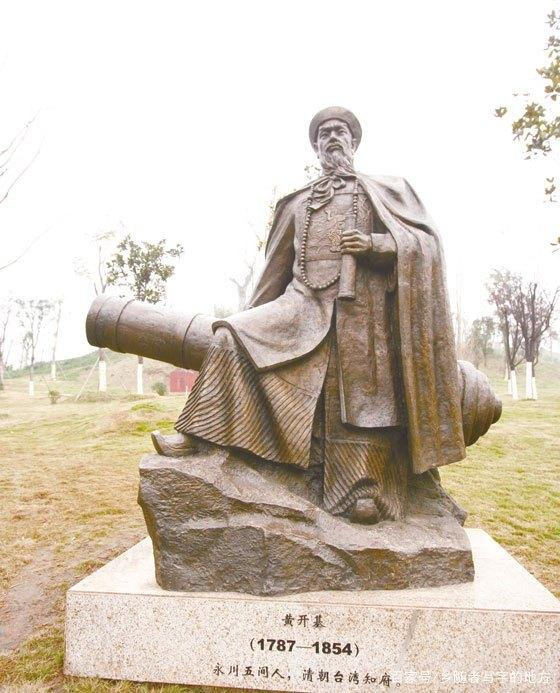
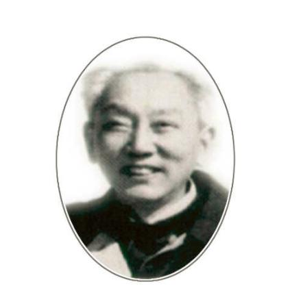
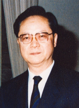

-
- 徐近之 进则救世，退则救民;不能为良相，亦当为良医。
徐近之，名念庄，光绪三十四年（1908）一月十八日生于朱沱乡渡牛村（原江津县，现永川区），民国11年（1922）进重庆市私立求精中学，民国16年考取南京东南大学地理学系。民国23年，徐近之被竺可桢派到拉萨，在拉萨建立了第一个青藏高原气象站。民国27年徐近之进入爱丁堡大学攻读地形学，获哲学博士学位。解放初，中国科学院成立，徐近之任中国科学院南京地理研究所研究员，研究室主任。学术委员，研究历史气候。还编著了青藏高原自然地理资料，分地质、地形、气候、植物、动物等分册（1954年科学出版社出版）。1981年8-9月，黄河上游洪水告急。徐近之曾警告有关部门：“近年高原天气形势在变，黄河秋涝仍然可能再现。”徐近之因心肌梗塞，抢救无效，与世长辞，终年73岁。
-
- 周公 夫君子之不骄，虽暗室不敢自慢。
郑东琴，名贤书，永川县人。生于光绪八年（1882）十月，病逝于1965年7月5日，终年83岁。民国15年8月，民生公司正式开业，民生轮行驶渝合线，营业兴旺，不久，时序进入冬季，江水枯落，即将停航。卢作孚找东琴商量，决定增辟渝涪线。东琴任过涪陵县知事，颇有人缘，他出面，涪陵人士即给予大力支持。民国19年，民生公司召开第五届股东大会，东琴被选为董事长（直至解放），民生公司资产已达35万元，民生公司在掌握了川江上游的航运后，又向长江中下游逐步扩展。重庆解放，东琴代表重庆市工商业，欢迎解放军入城，邓小平、刘伯承、吴玉章特邀东琴出席，他将全部黄金、美钞交国家，支持建设。东琴以民革、民建成员双重身份担任公司副董事长外，还兼任重庆工商联常委，四川省重庆政协委员，人民代表，直至逝世。
-
-  黄开基 人生有情泪沾衣，江水江花岂终极。
黄开基（1790～1856），字自堂，清重庆府永川县五间乡人，清抗英将领。清乾隆五十五年（1790）生，咸丰六年（1856）逝世。道光十六年（1836年），黄开基代理福建平和县知县，刚平定内乱不久，又迎来了洪涝的考验。当年，台海地区突发洪灾，来势凶猛，为数十年所罕见。眼看平和县百姓将遭灭顶之灾，黄开基心急如焚，身先士卒，带领当地群众筑堤防洪。当初平和县的闹事者，已被黄开基派去驻守边防，因多次击退海盗，暂无外侵之忧。于是，主动带领防卫人员一起返回县城，恳请官府批准他们参加抗洪抢险，自救家园。黄开基颇为感动，欣然应允。“人心齐，泰山移”。在黄开基的带领下，平和县内很快就新筑了一条防洪堤，成功抵抗住了洪水吞噬。据载，“当年，周边县城皆遭洪灾，民众流离失所，唯平和县及时修堤，安然无恙”。平和县的百姓为感谢黄开基的大恩大德，把这道防洪堤取名为“黄公堤”，以示纪念。
-
-  陈文贵 马嵬坡下泥土中,不见玉颜空死处。
陈文贵（1902.8.1-1974.1.1），中国科学院院士，微生物学家，1902年8月1日生于四川永川。1929年毕业于成都华西协和大学医学院，获医学博士学位。1955年被选聘为中国科学院学部委员(院士)。1974年1月1日在成都逝世。陈文贵从事医学微生物学研究和防疫工作。1952年赴朝鲜参加领导中国人民志愿军防疫工作， 获我国政府颁发的奖状、奖章和朝鲜政府授予的二级国旗自由勋章。
- 黄墨涵
-  杜攻
- 刘安恭
-
 蒋先法
蒋先法
- 张宣